MAP fit of the window blemish, one centre per day tied across days by a drift-informed random walk, shared width, depth free per day. Shape came out σ = 32.08 px → rhalf = 37.8 px, against the refiner's independently measured r = 38.2 px.
It is working — and it overturns what I told you earlier. I said the MAP position disagreed with the refiner by 57 px and so shouldn't be trusted. The panels show the opposite: the MAP circle sits on the dip, while the refiner cross and the drift prediction sit clearly off it.
On 2026-07-20, with drift ≈ 0, the MAP circle and the drift prediction coincide exactly on the blob centre — the method validates at baseline. On later days they separate, and the dip is where MAP says it is.
Two consequences. The refiner lags by construction: it averages a 7-day window, so
under monotonic drift it reports a stale position. And the blemish really does move
faster than the scene — consistent with parallax, since it sits centimetres from
the lens while the buildings are at infinity. That means tracking the aperture
off drift.csv would still under-correct; it has to track the
blemish itself.
| day | x drift | x MAP | x refiner | y drift | y MAP | y refiner | A % | resid rms % |
|---|---|---|---|---|---|---|---|---|
| 07-20 | 1183 | 1183 | — | 171 | 172 | — | 1.68 | 0.273 |
| 07-21 | 1184 | 1192 | 1192 | 176 | 161 | 180 | 2.11 | 0.318 |
| 07-22 | 1188 | 1214 | 1200 | 174 | 162 | 176 | 1.22 | 0.383 |
| 07-23 | 1211 | 1247 | 1200 | 160 | 148 | 176 | 1.47 | 0.878 |
| 07-24 | 1218 | 1270 | 1230 | 156 | 144 | 153 | 2.01 | 0.199 |
| 07-25 | 1224 | 1283 | 1230 | 155 | 139 | 153 | 1.98 | 0.335 |
| 07-26 | 1228 | 1289 | 1241 | 154 | 133 | 151 | 2.32 | 0.231 |
| 07-27 | 1231 | 1298 | — | 157 | 133 | — | 2.22 | 0.249 |
Dip, blob and residual panels share one fixed diverging scale, ±3% around zero — blue below the fitted background, red above, neutral grey at zero. The data panel is a single-hue magnitude ramp over its own 1st–99th percentile. Each panel is 300 px of the 4K frame; the top is clipped on later days because the blemish is only ~150 px below the frame edge.
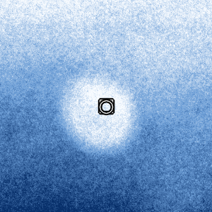
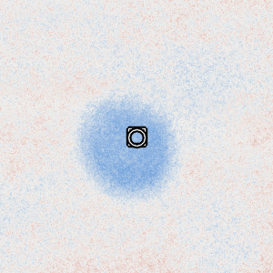
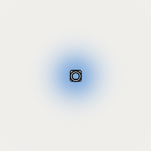
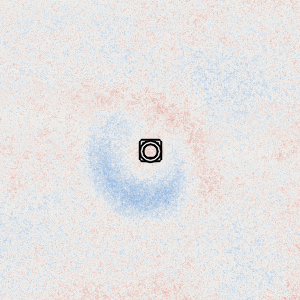
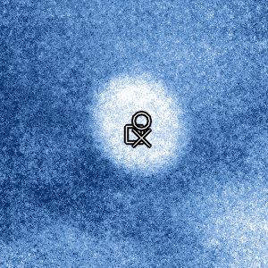
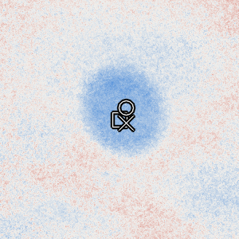
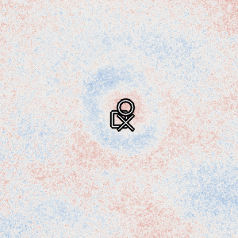
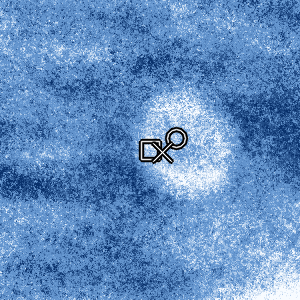
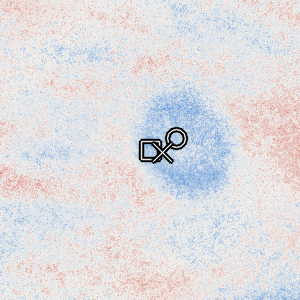
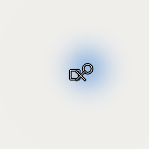
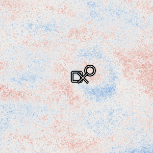
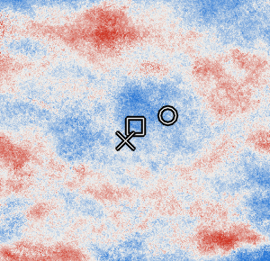
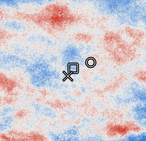
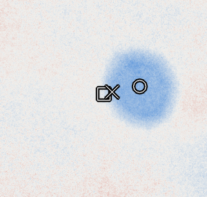
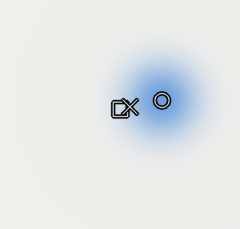
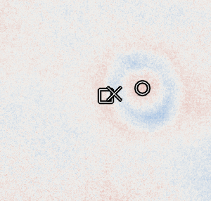
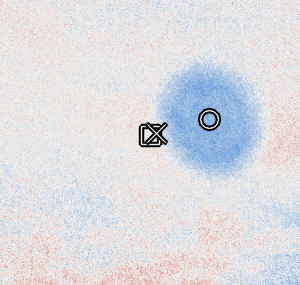
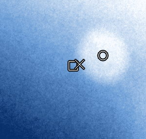
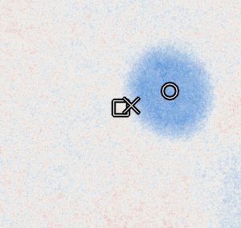
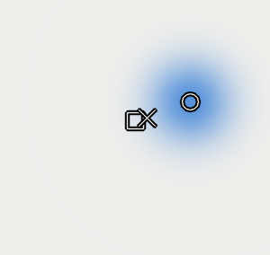
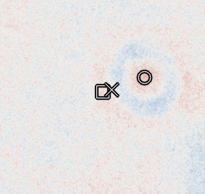
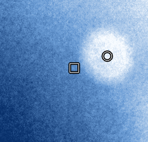
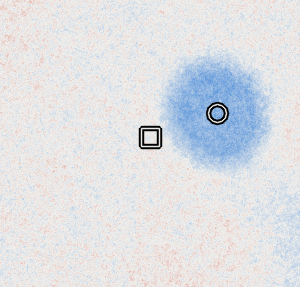
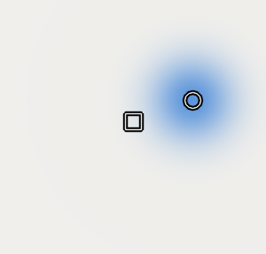
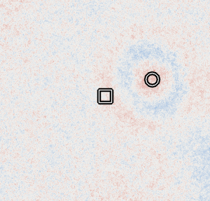